Midterm Exam, Wednesday, April 9, 1997.
Please do all three problems. Show all work. No books or calculators allowed.
You may use any result from class, the homeworks, or the texts, except where
stated.
You may use one sheet of handwritten notes.
The exam lasts two hours.
- 1.
- (25 points)
The max clique feasibility problem can be described
as follows:
An instance consists of a graph G=(V,E) and an integer k.
The answer is YES if the graph contains a clique with at
least k vertices; otherwise, the answer is NO.
Show that the max clique problem is NP-complete.
(Hint: You may assume the following problems are NP-complete:
SATISFIABILITY, 3-SATISFIABILITY,
NODE PACKING, HAMILTONIAN PATH, HAMILTONIAN CIRCUIT.
It should be possible to use one of these in a reduction.
Instances of these problems are defined as follows:
SATISFIABILITY: Given a set of boolean variables
and a set of clauses consisting of
literals (each of which is a variable or a negated variable)
does there exist
an assignment for the variables so that at least one literal
in each clause is true?
3-SATISFIABILITY:
An instance of satisfiability where each clause contains exactly
three literals.
NODE PACKING:
Given a graph G=(V,E) and a integer k,
does there exist a subset 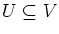
with
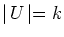
where no two of the vertices in U share an edge?
HAMILTONIAN PATH:
Given a graph G=(V,E), does there exist a path which visits
every vertex?
HAMILTONIAN CIRCUIT:
Given a graph G=(V,E), does there exist a circuit which visits
every vertex?)
- 2.
- (50 points)
- (a)
- (42 points; each part is worth six points.) Consider the binary knapsack problem:
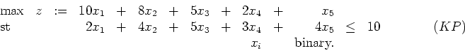
Let
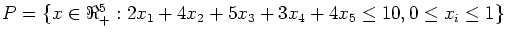
and
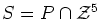.
- i.
- Solve the LP-relaxation
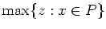.
(Hint: You can solve the relaxation by ordering the variables
in decreasing order of cj/aj and then successively
using as much as
possible of the next available variable until all of the
resource b is consumed. Here, cj are
the objective function coefficients, aj are the
constraint coefficients, and b is the right hand side
of the constraint.)
- ii.
- What is the dimension of S?
- iii.
- Prove that
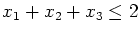
is a valid inequality for S.
- iv.
- Prove that
is a facet of conv(S),
the convex hull of S.
- v.
- What is the Chvatal-Gomory rank of the inequality
?
- vi.
- Prove that
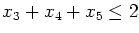
is a valid inequality for S.
- vii.
- Show that the inequality
can be lifted
to give a stronger valid inequality for S.
- (b)
- (8 points)
Consider the general binary knapsack problem:
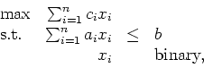
where b>0, and ai>0, ci>0 for 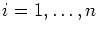.
Generalize the results of part 2a to give a class of
valid inequalities for this problem.
- 3.
- (25 points)
Consider the 0-1 equality knapsack problem
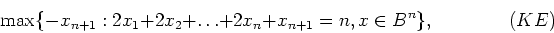
where n is an odd integer.
We wish to solve this problem using a branch and bound algorithm
with linear programming relaxations.
- (a)
- (5 points)
Show that xn+1=1 in any feasible solution to (KE).
- (b)
- (10 points)
Assume
we always separate using variable dichotomies
(ie, add the constraints xi = 0 or xi = 1 for some i).
Show that if no more than
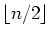
of the variables
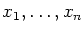
have been fixed at 0 or 1 then the relaxation has value 0.
Hence show that an exponential number of nodes of the
branch and bound tree must be considered to solve the problem.
- (c)
- (10 points)
What is the minimum number of nodes we need if we can separate
using any linear inequality?
(Assume that you obtain an extreme point optimal solution to any
relaxation that you set up, provided such a solution exists.)
John E. Mitchell
2005-11-28